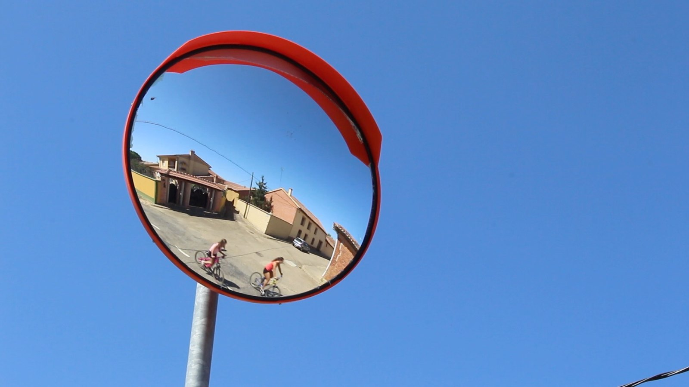
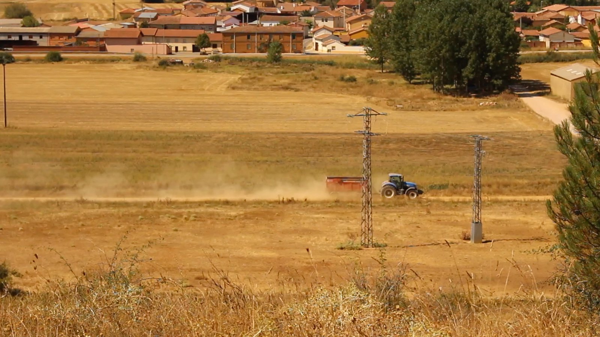
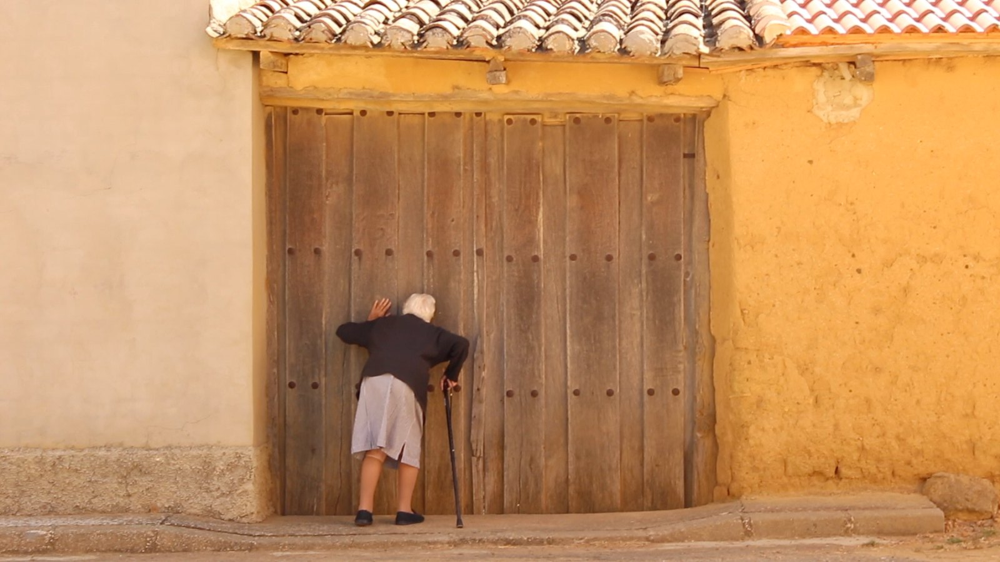
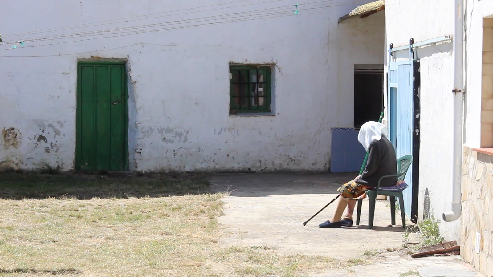
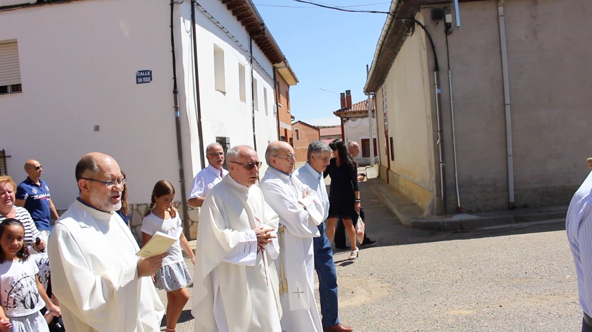

← Films
 Play
Play
TIERRA
Don Adolfo, the village schoolteacher, was murdered in Sahelices del Río during the Spanish Civil War. Testimonies and an investigation uncover a village with a great deal to tell.
Play
- Year
- 2019
- Format
- Documentary
- Location
- Sahelices del Río, Castilla y León
- My role
- Direction and edit
The film
TIERRA starts from a name: don Adolfo, the schoolteacher of Sahelices del Río, a small village in Castilla y León, murdered during the Civil War. Through the testimonies of the people who still live there and an investigation that follows every lead, the documentary uncovers a village that has a great deal to tell.
A film about memory, made street by street: the processions, the doorways, the fields at harvest time, and the voices that remember.
Stills





Direction & edit: Iyán Rojo